Trees up to 10 m tall.
10 ಮೀಎತ್ತರದವರೆಗಿನ ಮರಗಳು.
Trees up to 10 m tall.
மரங்கள் 10 மீ. உயரம் வரை வளரக்கூடியது.
Bark brown, irregularly flaky; blaze red.
ತೊಗಟೆ ಕಂದು ಬಣ್ಣ ಹೊಂದಿದ್ದು ಅನಿಯತವಾಗಿ ಚಕ್ಕೆಯೇಳುತ್ತವೆ;ಕಚ್ಚು ಮಾಡಿದ ಜಾಗ ಕೆಂಪು.
Bark brown, irregularly flaky; blaze red.
மரத்தின் பட்டை ப்ரவுன் நிறமானது, ஒழுங்கற்ற செதில்களாக உதிருபவை; உள்பட்டை சிவப்பு நிறமானது.
Young branchlets subterete, slender, glabrous.
ಎಳೆಯ ಕಿರುಕೊಂಬೆಗಳು ಉಪ-ದುಂಡಾಗಿದ್ದು,ತೆಳುವಾಗಿರುತ್ತವೆ ಮತ್ತು ರೋಮರಹಿತ -ವಾಗಿರುತ್ತವೆ.
Young branchlets subterete, slender, glabrous.
சிறியநுனிக்கிளைகள் குறுக்குவெட்டுத் தோற்றத்தில் வளையமானது, மெல்லியது, உரோமங்களற்றது.
Leaves simple, opposite, decussate; petiole ca. 0.3 cm long, canaliculate, glabrous; lamina 6-8.5 x 2-3 cm, lanceolate, apex caudate, base attenuate, margin entire, pellucid gland dotted, glabrous, pale beneath; midrib slightly canaliculate; intramarginal nerve present; secondary_nerves ca. 12 pairs; tertiary_nerves admedially ramified.
ಎಲೆಗಳು ಸರಳವಾಗಿದ್ದು ಕತ್ತರಿಯಾಕಾರದ ಅಭಿಮುಖ ಜೋಡನಾ ವ್ಯವಸ್ಥೆಯಲ್ಲಿರುತ್ತವೆ ; ಎಲೆತೊಟ್ಟುಗಳು ಅಂದಾಜು 0.3 ಸೆಂ.ಮೀ.ಉದ್ದವಿದ್ದು ,ಕಾಲುವೆ ಗೆರೆಯನ್ನು ಹೊಂದಿರುತ್ತವೆ ಮತ್ತು ರೋಮರಹಿತವಾಗಿರುತ್ತದೆ; ಪತ್ರಗಳು 6-8.5 X 2-3 ಸೆಂ.ಮೀ. ಗಾತ್ರ, ಭರ್ಜಿಯ ಆಕಾರ,ಬಾಲರೂಪಿ ತುದಿ,ಒಳಬಾಗಿದ ಬುಡ,ನಯವಾದ ಅಂಚು, ಪ್ರಕಾಶ ಭೇಧ್ಯ ಪಾರದರ್ಶಕವಾದ ಚುಕ್ಕೆಗಳಿಂದ ಕೂಡಿದ್ದು ರೋಮರಹಿತವಾಗಿರುತ್ತವೆ ಮತ್ತು ತಳಬಾಗದಲ್ಲಿ ತೆಳು ಬಣ್ಣ ಹೊಂದಿರುತ್ತವೆ;ಮಧ್ಯನಾಳ ಕೊಂಚವಾಗಿ ಕಾಲುವೆ ಗೆರೆಯನ್ನು ಹೊಂದಿರುತ್ತದೆ;ಅಂತರ ಅಂಚಿನ ನಾಳಗಳು ಇರುತ್ತವೆ;ಎರಡನೇ ದರ್ಜೆಯ ನಾಳಗಳು ಅಂದಾಜು 12 ಜೋಡಿಗಳಿರುತ್ತವೆ;ಮೂರನೇ ದರ್ಜೆಯ ನಾಳಗಳ ಕವಲುಗಳು ಎಲೆಯ ಅಕ್ಷದ ಕಡೆಗಿರುತ್ತವೆ. ಪತ್ರದ ಬುಡದಲ್ಲಿ 5-7 ನಾಳಗಳು ಇರುತ್ತವೆ.
Leaves simple, opposite, decussate; petiole ca. 0.3 cm long, canaliculate, glabrous; lamina 6-8.5 x 2-3 cm, lanceolate, apex caudate, base attenuate, margin entire, pellucid gland dotted, glabrous, pale beneath; midrib slightly canaliculate; intramarginal nerve present; secondary_nerves ca. 12 pairs; tertiary_nerves admedially ramified.
இலைகள் தனித்தவை, எதிரடுக்கமானவை, குறுக்குமறுக்கானவை; இலைக்காம்பு 0.3 செ.மீ. நீளமானது, குறுக்குவெட்டுத் தோற்றத்தில் கேனாலிகுலேட், உரோமங்களற்றது; இலை அலகு 6-8.5 X 2-3 செ.மீ., ஈட்டி வடிவானது, அலகின் நுனி வால் போன்றது, அலகின் தளம் அட்டனுவேட், அலகின் விளிம்பு முழுமையானது, ஒளிபுகும் சுரப்பி புள்ளிகளுடையது, உரோமங்களற்றது, அலகின் கீழ்பரப்பு வெளிறிய நிறமானது; மையநரம்பு மேற்புறத்தில் அலகின் பரப்பைவிட சிறிது பள்ளமானது; விளிம்பு நரம்பு (இண்ட்ராமார்ஜினல் நரம்பு) கொண்டது; இரண்டாம் நிலை நரம்புகள் 12 ஜோடிகள்; மூன்றாம் நிலை நரம்புகள் அட்மீடியல்லி ராமிபைடு.
Inflorescence axillary or extra axillary branched cymes.
ಪುಷ್ಪಮಂಜರಿಗಳು ಅಕ್ಷಾಕಂಕುಳಿನಲ್ಲಿನ ಅಥವಾ ಹೊರಅಕ್ಷಸ್ಥದಲ್ಲಿನ ಕವಲೊಡೆದ ಮಧ್ಯಾರಂಭಿ ಮಾದರಿಯವುಗಳಾಗಿರುತ್ತವೆ.
Inflorescence axillary or extra axillary branched cymes.
மஞ்சரி இலைக்கோணங்களில் காணப்படும் அல்லது இலைக்கோணங்களுக்கு சற்று மேல் காணப்படுபவை கிளைகளுடைய சைம் வகை மஞ்சரி.
Berry; seed one.
ಫಲಗಳು ಬೆರ್ರಿ ಮಾದರಿಯವು; ಬೀಜ ಒಂದು.
Berry; seed one.
முழுச்சதைகனி (பெர்ரி); ஒரு விதையுள்ள கனி.
 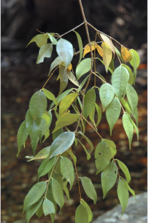
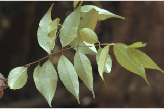
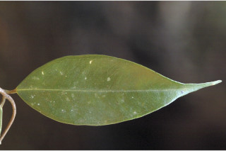
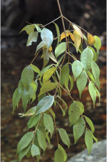
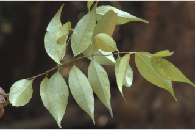
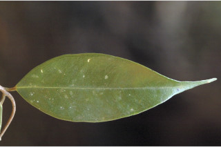
 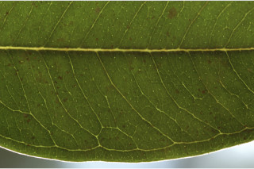
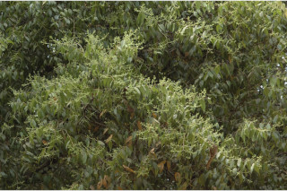
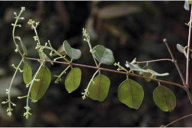
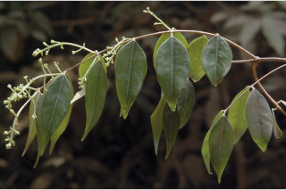
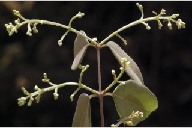
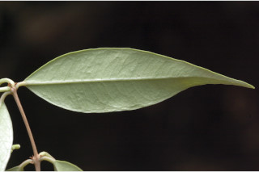
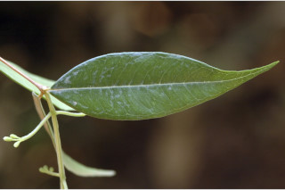
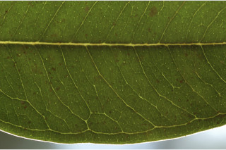
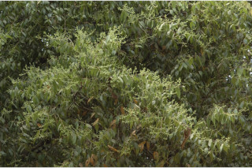
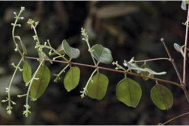
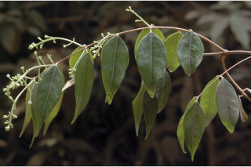
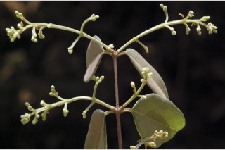
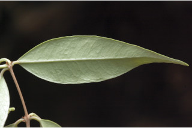
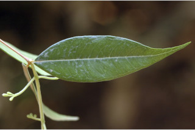